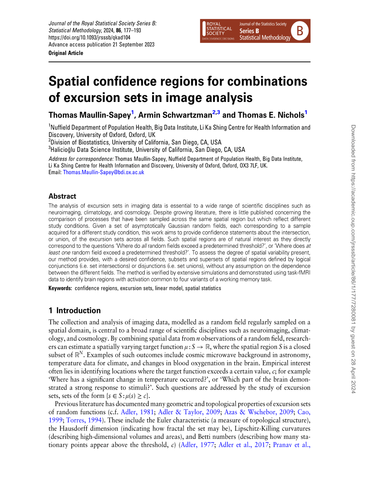

Spatial Confidence Regions for Combinations of Excursion Sets in Image Analysis
Maullin-Sapey, T., Schwartzman, A. and Nichols, T.E. (2023). JRSSB.
The analysis of excursion sets in imaging data is essential to a wide range of scientific disciplines such as neuroimaging, climatology and cosmology. Despite growing literature, there is little publi... (see more)
(Press ESC to Exit)
(Tap Away to Exit)
Multi-level Modelling and Spatial Inference for Large-Scale Neuroimaging Data
Maullin-Sapey, T. (2022). Postgraduate Thesis.
Recent developments in data sharing and availability provide a vast new window of opportunity for large-sample fMRI analysis. The increased statistical power resulting from larger sample sizes allows ... (see more)
(Press ESC to Exit)
(Tap Away to Exit)
Alcohol consumption and MRI markers of brain structure and function: Cohort study of 25,378 UK Biobank participants
Topiwala, A., Ebmeier, K.P., Maullin-Sapey, T. and Nichols, T.E. (2022). NeuroImage.
Moderate alcohol consumption is widespread but its impact on brain structure and function is contentious. The relationship between alcohol intake and structural and functional neuroimaging indices, th... (see more)
(Press ESC to Exit)
(Tap Away to Exit)
BLMM: Parallelised computing for big linear mixed models
Maullin-Sapey, T. and Nichols, T.E. (2022). NeuroImage.
Within neuroimaging large-scale, shared datasets are becoming increasingly commonplace, challenging existing tools both in terms of overall scale and complexity of the study designs. As sample sizes g... (see more)
(Press ESC to Exit)
(Tap Away to Exit)
Fisher Scoring for Crossed Factor Linear Mixed Models
Maullin-Sapey, T. and Nichols, T.E. (2021). Statistics and Computing.
The analysis of longitudinal, heterogeneous or unbalanced clustered data is of primary importance to a wide range of applications. The linear mixed model (LMM) is a popular and flexible extension of t... (see more)
(Press ESC to Exit)
(Tap Away to Exit)
Visualisation and Integration of Multiple Brain Imaging Studies
Maullin-Sapey, T. (2017). Undergraduate Dissertation.
This undergraduate dissertation aims to develop tools allowing neuroimaging data to be easily shared, displayed and combined to encourage improved recording of data and further dat... (see more)
(Press ESC to Exit)
(Tap Away to Exit)